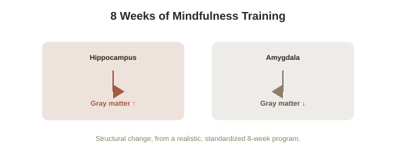

Chapter 9: Meditation and Structural Brain Change
Chapter 8 covered habits — practice that produces automatic, low-attention behavior. Meditation sits almost at the opposite end of the same spectrum: a practice built entirely around deliberately, repeatedly directing attention, sustained over time. It also happens to be one of the best-documented cases of adult structural brain change outside the taxi driver and musician research already covered in this arc, which makes it a natural place to bring several of this topic's threads together.
The Davidson-Lutz research on long-term meditators
Neuroscientist Richard Davidson and researcher Antoine Lutz, working with Buddhist monks with tens of thousands of hours of meditation practice, found measurable differences in brain activity during meditation compared to novice meditators — most notably substantially elevated gamma-wave synchronization, a pattern of neural activity associated with focused attention and sensory integration, at levels well outside the range typically observed in untrained individuals. While this specific study involved a small, unusually extreme sample (making it more a proof-of-concept than broadly generalizable evidence on its own), it helped motivate a much larger body of subsequent research using more typical meditators and shorter training periods, developed further below.
Structural changes at a much more modest, achievable dose
More directly useful for most readers is research by Sara Lazar and colleagues, who used MRI to compare experienced meditators to non-meditators and found measurably greater cortical thickness in regions associated with attention and sensory processing — and, in a separate study using a standard 8-week mindfulness-based stress reduction program with participants who had no prior meditation experience, measurable increases in gray matter density in the hippocampus (again, the same structure central to Chapters 1 and 3) and reductions in gray matter density in the amygdala, a region central to fear and stress responses, correlating with self-reported stress reduction. This second study matters considerably more for practical purposes than the monk research: it shows meaningful structural change from a realistic, time-limited program, not just from decades of intensive practice.

Attention as the mechanism, tying back to Chapter 2
The plausible mechanistic link back to this arc's earlier chapters is direct: meditation is, at its structural core, sustained, repeated practice of directing and holding attention on a specific target (breath, bodily sensation, a specific mental quality), which by Chapter 2's Hebbian logic should preferentially strengthen the specific neural circuits most engaged by that sustained attentional effort — attention- and interoception-related regions, which is exactly where Lazar's and others' structural findings are concentrated. This is a good instance of this arc's broader argument holding up under a genuinely different practice: it isn't that meditation has some unique, separate mechanism, but that it's a particularly clean, repeatable way of deliberately directing the same LTP-driven strengthening process this entire topic has been tracing.
The honest caveats this research still carries
In keeping with this arc's consistent practice of flagging where evidence is weaker than popular coverage suggests: much of the meditation-and-brain-structure literature involves modest sample sizes, and effect sizes, while statistically real in multiple independent studies, are generally described by researchers in the field as small-to-moderate rather than dramatic — closer to other well-evidenced brain-training effects than to a uniquely transformative intervention. It's also worth noting that self-selection is a persistent methodological concern in studies comparing long-term meditators to non-meditators (people who stick with meditation for years may differ in relevant ways from those who don't, independent of the practice itself), which is part of why the randomized, standardized 8-week program studies carry more weight than pure comparison studies of already-experienced practitioners.
Where this leaves the belief-and-effort synthesis
Meditation offers a particularly clean version of this arc's central pattern: sustained, deliberately directed effort (the practice itself), motivated and sustained partly by belief in its value (self-efficacy and expectation, as in Chapter 5), producing measurable structural change concentrated in exactly the circuits that effort most engages (attention and interoception regions, following Chapter 2's mechanism) — the same three-part structure traced through deliberate practice, habit formation, and now meditation, each time with its own specific mechanism and its own honest limits.
Try this
Ideas for noticing or testing this in your own life.
- If you're curious about meditation's effects, an 8-week standardized program — the format actually studied by Lazar's structural research — is a more evidence-grounded starting point than an unstructured, open-ended attempt.
- Notice that this chapter's strongest evidence involves a realistic 8 weeks, not years of monastic practice — a useful corrective if "meditation" has felt like a commitment only worth making at an extreme level to see any real effect.
Worth pulling on?
A few loose threads from this chapter — if any of these genuinely grab you, that's a good sign of where to go next.
- With deliberate practice, mindset, habits, and meditation all covered, this arc closes by returning honestly to what plasticity does not promise. → The subject of the final chapter: the real limits of neuroplasticity.
- Meditation's effects and mechanisms are covered in much greater depth, across a full topic of their own, elsewhere in this library. → Already in the library: Meditation & Contemplative Practice covers the practice itself in far more detail.